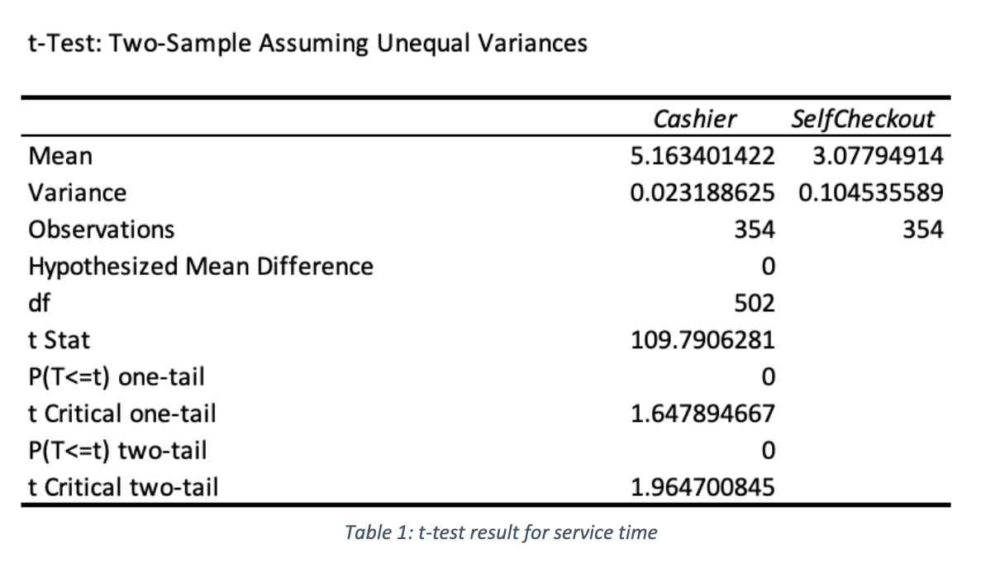
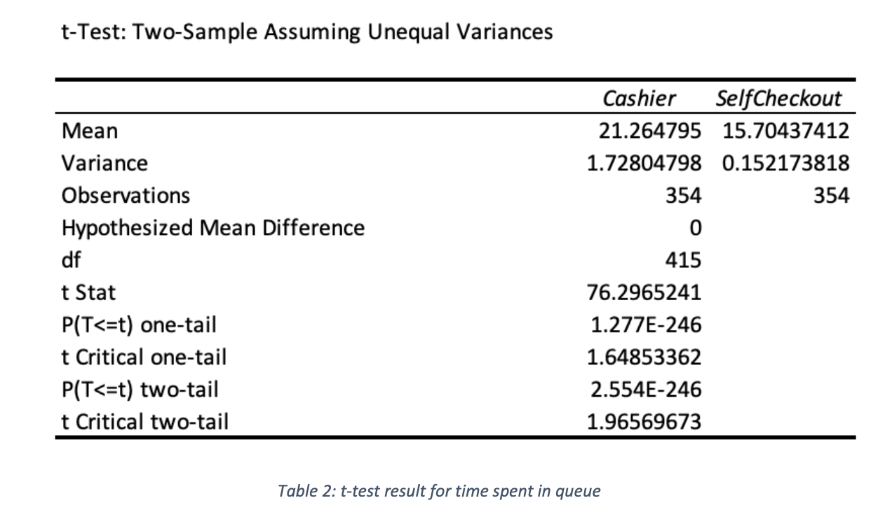

t-test
t-test is done on excel for both service time and time spent in queue of the customers. This is to test if it is statistically significant that both the average
service time and average time customers spent in queue between the Cashier and Self-Checkout are different.
H0:μ1 -μ2 =0
H1: μ1 - μ2 ≠ 0
At 5% level of significance
μ1 refers to the mean waiting time in queue for the cashier queue
μ2 refers to the mean waiting time in queue for the self-checkout queue
Below are the results of the t-test
Service Time

If t-statistics is greater than t-critical in a two tail test, we reject null hypothesis. For service time test results, according to table 1, t Stat is 109.79 which is greater than the t critical two tail of 1.9647. Therefore, we reject the
null hypothesis and conclude that there is sufficient evidence for the mean service time of cashier queue to be different from the mean service time of the self-checkout queue.
Time Spent In Queue

The same is done for the t-test of time spent in queue. The t Stat is 76.297, which is also larger than the t critical two-tail of 1.966. Hence, we reject the null hypothesis
and conclude that there is sufficient evidence for the mean time spent in cashier queue to be different from the mean time spent in self-checkout queue.